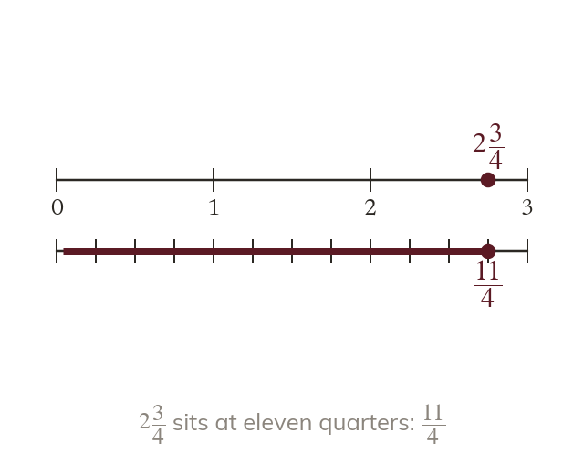

Wholes are made of parts
A mixed number is a whole number and a proper fraction together. Each whole is one denominator's worth of parts.
A mixed number is a whole number and a proper fraction together. Each whole is one denominator's worth of parts, so a mixed number can always be written as an improper fraction.